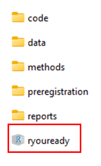
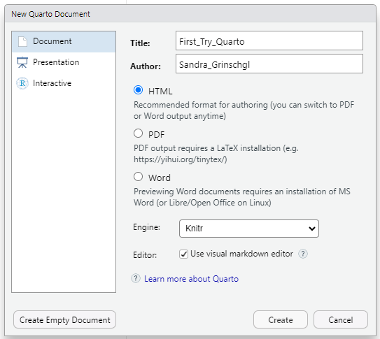

# #| label: BeispiellabelHands On – Coding Basics (Einheiten 5 und 6)
Bei Bedarf findest du hier nochmals die Slides zu Einheit 5:
Und hier die Slides zu Einheit 6:
Wiederholung Hands On Block 2:
- Projekt und relativer Pfad: Arbeitet immer mit eurem R Projekt. Klickt auf dieses, um R zu öffnen.

Ausgehend vom Arbeitsverzeichnis des Projektes, kannst du Dateien mit einem relativen Pfad in den jeweiligen Unterordnern abspeichern. z.B.:
write.csv(dat_full, "data/processed/dat_full.csv")Ebenso kannst du ausgehend vom Arbeitsverzeichnis des Projektes auch Dateien einlesen, z.B.:
dat_pct <- read.delim("data/raw/data_pct.csv", delim = ";")Ergänzung: Um sicherzustellen die Dateien ausgehend vom Arbeitsverzeichnis des Projektes zu lesen kannst du die Funktion
hereaus dem gleichnamigen Packagehere::verwenden, z.B.dat_pct <- read.csv(here::here("data", "raw", "dat.full.csv")). Die Funktion geht immer vom Ordner der Projektdatei aus und baut dann anhand der beliebig vielen angegebenen Argumente selbstständig den passenden Pfad zum Einlesen einer Datei. Wir empfehlen dir für dein Abschlussprojekt mithere()zu arbeiten.Mehrere Datensätze könnten mit
full_join()“gemerged” werdenDatensätze können mit z.B.
head()undsummary()inspiziert werden
Wir haben nun schon mit einigen Funktionen gearbeitet, wie etwa full_join(). Falls du die Übungen der letzten Wochen noch nicht abgeschlossen hast, versuche diese nun nachzuholen. Schaue dir
Funktionen
Tab Completion
und Style Conventions an.
Lernziele des Hands-On-Blocks 3
✅Basics Reproduziebarer Code
✅Quarto
✅Faktoren
✅Datentypen: Vektoren, Listen, Matrizen, Dataframes
Reproduzierbarer Code: Quarto
👉R for Datascience, Kapitel 28
Bisher haben wir hauptsächlich in klassischen R-Skripten gearbeitet. RStudio bietet jedoch auch die Möglichkeit, in einem Dateiformat zu arbeiten, dass Textelemente und Code kombiniert 👉 Quarto.
Quarto verbindet normalen Text und Code in einem dynamischen Dokument. Auch diese Website wurde mit Quarto erstellt. Dadurch lässt sich die Kommentierung von Code besser integrieren, was die Arbeit insgesamt reproduzierbarer macht. Mit Quarto können zudem ganze Dokumente erstellt werden, beispielsweise eine Masterarbeit.
Der Vorteil von Quarto ist, dass Code ausführlich kommentiert werden kann und Skripte mit Überschriften, Inhaltsverzeichnis etc. erstellt werden können. Das macht R-Coder übersichtlicher und verständlicher und somit auch reproduzierbarer.
Übungen:
- Erstelle ein neues Quarto-Skript:

Versuche dich zu orientieren: Wie wechselst du zwischen dem Visual und Source Editor?
Erstelle eine Überschrift:
Suche zuerst nach der entsprechenden Option im Visual Editor.
Schau dir anschließend die Überschrift im Source Editor an. Wie unterscheiden sich Überschriften von normalem Text?
NoteLösung
Überschriften sind anders formatiert, mit grösserer Schrift und in Fettdruck. Ausserdem werden anhand von entsprechend formatierten Überschriften die Outline im Dokument erstellt (siehe rechts oben im Skript). Beim Rendern kann anhand dieser Outline automatisch ein Inhaltsverzeichnis generiert werden lassen.
- Schreibe einige Dinge in kursiv, fett, unterstrichen, Schaue dir diese im Source Editor an.
NoteLösung
Dieser Text ist teilweise in kursiv, in fett und unterstrichen formatiert.
- Rendere deine Datei indem du den Button “Render” verwendest. Schaue dir das Resultat an.
Eine gerenderete Datei ist eine PDF, HTML oder Word Datei, die man dann auch mit anderen Programmen als R öffnen kann. So könnte man z.B. aus einem Quarto Dokument den Ergebnisteils für eine Masterarbeit erstellen und diesen als Word Datei speichern.
Code Chunks
Für weitere Informationen, konsultiere das Quarto Cheatsheat und die Quarto Website.
Erstelle einen neuen Code-Chunk:
- Versuche es im Visual Editor, indem du ein „/“ eingibst und im Drop-down-Menü „R-Code Chunk“ auswählst
Gib deinem Code-Chunk ein “Label”. Verwende dafür “#|” in deinem Chunk um lokale Einstellungen zu setzen. (📖 R4DS Kapitel 28.5.1).
NoteLösung
Der erste # ist hier nur von uns gesetzt, damit die Chunkoption beim Rendern nicht wie gewöhnlich ausgeblendet wird. Eigentlich wird dieser nicht verwendet.
- Manchmal will man nicht alle Teile des Skripts in das gerenderte Dokument übernehmen. Erstelle einen neuen Code-Chunk und stelle
evalundincludeauf TRUE
NoteLösung
# #| eval: TRUE
# #| include: TRUEAuch hier bräuchte es die ersten # nicht, sofern die Chunkoption nicht ausgeschaltet und zu demonstrationszwecken als Kommentar angezeigt werden sollte.
- Kreiere eine neue Variable
datummit dem heutigen Datum. Nutze dafürSys.Date()
NoteLösung
datum <- Sys.Date()Inline Code
Füge folgenden dynamischen Satz in dein Dokument ein: „Dieses Dokument wurde zum letzten Mal am
datumbearbeitet.“Benutze dafür die Variable
datumdie du bereits kreiert hast. Diese kannst du hinzufügen indem du “/” benutzt und “Inline R Code” suchst. Alternativ kannst du über Insert - Any - Inline Code einfügen. Diese Option funktioniert nur in der Ansicht Visual. Alternativ kannst du im Visual View über Insert - Any - Inline Code einfügen. Inline Code lässt sich auch mit diesem Sonderzeichen ` kreieren wenn du danach ein “r” eingibst. Diese Methode funktioniert in beiden Ansichten.
NoteLösung
*Dieses Dokument wurde zum letzten Mal am 2026-04-28 bearbeitet.
- Rendere das Dokument: Stelle ganz oben in deinem Dokument dafür das Format auf docx um. Wenn du das Dokument als PDF rendern willst benötigst du TinyTeX. Das kannst du mit dem Befehl
install.packages("tinytex")installieren.
NoteLösung
install.packages("tinytex") # am besten direkt in der Console eingeben
# Auch noch oben im YAML Header das Format unter format zu `docx` oder ggf. `pdf` ändern:
---
title: "Hands On – Coding Basics (Einheiten 5 und 6)"
editor: visual
format: docx
---Beachte: Eigentlich hat ein YAML-Header in einem Code-Chunk nichts zu suchen. Hier ist er nur eingesetzt worden um besser zeigen zu können was geändert werden muss!
- Nutze dafür den Render-Button und schau dir das gerenderte Ergebnis an. Was ist mit deinem dynamischen Satz passiert?
Das Resultat sollte so aussehen (mit dem aktuellen Datum):
Dieses Dokument wurde zum letzten Mal am 2026-04-28 bearbeitet.
Important
Quarto-Dokumente lassen sich nur rendern, wenn das gesamte Skript fehlerfrei durchläuft. Tritt beim Rendern ein Fehler auf, ist es sinnvoll, das gesamte Skript auszuführen und auf Fehlermeldungen zu achten. Auf diese Weise wird die Reproduzierbarkeit sichergestellt.
Möchte man das Skript trotz eines Fehlers rendern, kann man an den entsprechenden Code-Chunk #| eval: false schreiben - dies verhindert, dass der Code für die gerenderte Datei ausgeführt wird
Quarto Header
In den Code Chunks hast du bereits einige Einstellungen kennengelernt. In den Quarto-Headern lassen sich verschiedene Einstellungen vornehmen.
Beispielsweise kann man den Output des Dokuments anpassen (z. B. format: html format: docx format: pdf).
Manchmal möchte man auch globale Einstellungen vornehmen, die für das gesamte Dokument gelten.
Zum Beispiel kann es sinnvoll sein, Warnmeldungen von R im gerenderten Dokument auszublenden, um die Übersicht zu behalten.
Dies lässt sich mit der Option warning: false einstellen.
- Versuche den Quarto Header so zu verändern das du ein Word oder PDF renderst.
NoteLösung
So nuss der Header aussehen wenn das Outputformat .docx entsprechen soll:
---
title: "Hands On – Coding Basics (Einheiten 5 und 6)"
editor: visual
format: docx
execute:
warning: false
---Und so muss der Header aussehen wenn das Outputformat .pdf entsprechen soll:
---
title: "Hands On – Coding Basics (Einheiten 5 und 6)"
editor: visual
format: pdf
execute:
warning: false
---Viele weitere Einstellungsmöglichkeiten findest du unter folgendem Link.

Übungen Quarto Header
Stelle in deinem Quarto Header die folgenden Einstellungen ein, indem du die Elemente des YAML-Headers überarbeitest. Diesen findest du ganz oben in deinem Dokument. Dafür kannst du den Code-Block unten kopieren und für deinen Header anpassen.
Titel
Autor:in
Inhaltsverzeichnis (toc) = TRUE
Position des Inhaltsverzeichnisses = left
Warning = FALSE
Message = FALSE
title: 'Gib hier den Namen deines Dokuments ein' author: 'Dein Name' date: today format: html: theme: flatly toc: # Inhaltsverzeichnis? toc-location: # Links oder Rechts? execute: warning: # TRUE or FALSE message: # TRUE or FALSE
NoteLösung
title: 'Gib hier den Namen deines Dokuments ein'
author: 'Dein Name'
date: today
format:
html:
theme: flatly
toc: TRUE # Inhaltsverzeichnis?
toc-location: left # Links oder Rechts?
execute:
warning: TRUE # TRUE or FALSE
message: TRUE # TRUE or FALSEAufgabe: Rendere das Dokument erneut und überprüfe das gerenderte Ergebnis im Vorschaufenster oder im Ausgabeordner.
Arbeite von nun an immer in einem Quarto Skript. Für das Abschlussprojekt findest du im Ordner “code” schon zwei vorgegebene Quarto Skripte.
Faktoren (Spezialtyp eines Vektors):
👉Einführung in R, Kapitel 2.4.4
Aufgabe: Arbeiten mit kategorialen Variablen (Faktoren)
Kategoriale bzw. nominale Variablen werden in R als Faktoren gespeichert (factor-Datentyp).
- Erstelle einen Character-Vektor mit mindestens fünf Einträgen, die verschiedene Geschlechtskategorien enthalten (z. B. “male”, “female”, “nonbinary”).
NoteLösung
gender_vec <- c("female", "male", "nonbinary", "female", "male")- Definiere nun einen Faktor mit der Funktion
factor()für diesen Vektor.
NoteLösung
gender_fac <- factor(gender_vec)- Untersuche die Eigenschaften deines Faktors mit den Funktionen
class(),attributes()undtable().
NoteLösung
class(gender_fac)[1] "factor"attributes(gender_fac)$levels
[1] "female" "male" "nonbinary"
$class
[1] "factor"table(gender_fac)gender_fac
female male nonbinary
2 2 1 Beachte: Die erste Stufe des Faktors ist die sogenannte Referenzkategorie – sie ist für manche Analysen relevant. Mit relevel() kannst du die Referenzkategorie ändern.
NoteLösung
gender_fac_rlvl <- relevel(gender_fac, ref = "male")Die Referenzkategorie haben wir hier “male” gewählt - dies ist je nach Studiendesign oder gewünschter Analyse zu entscheiden.
Datenstrukturen: Vektoren, Listen, Matrizen und Data Frames
Bevor wir mit den Übungen starten, ein Überblick über die Unterschiede:
| Struktur | Eigenschaften | Beispiel-Inhalt |
|---|---|---|
| Vektor | - Enthält Elemente eines Datentyps - Grundbaustein in R |
c(1, 2, 3) oder c("Anna", "Ben") |
| Liste | - Kann verschiedene Datentypen enthalten - Elemente können unterschiedlich lang sein |
Zahlenvektor, Textvektor, logischer Vektor in einer Liste |
| Matrix | - Enthält nur einen Datentyp - Hat feste Dimensionen (Zeilen, Spalten) |
3x3-Matrix mit Zahlen 1–9 |
| Data Frame | - Tabellarisch aufgebaut - Spalten können unterschiedliche Datentypen enthalten - Jede Spalte gleich lang |
Tabelle mit Name (Character), Alter (Numeric), Studiert (Logical) |
👉 Merksatz:
Vektor = einfachste Struktur, ein Datentyp
Liste = flexibel, verschiedene Datentypen
Matrix = „Zahlenrechteck“, ein Datentyp
Data Frame = Tabelle, Spalten können unterschiedliche Datentypen haben
Vektoren:
Wir haben in den Hands-On-Übungen Block 1 und 2 bereits einige einfache Vektoren erstellt und damit operiert.
Matrizen
Eine Matrix besteht nur aus einem Datentyp (z.B. nur Zahlen).
- Erstelle eine 3x3-Matrix
matrix()mit den Zahlen 1 bis 9.
NoteLösung
matrix(1:9, nrow = 3, ncol = 3, byrow = TRUE) [,1] [,2] [,3]
[1,] 1 2 3
[2,] 4 5 6
[3,] 7 8 9Da in der Aufgabe nicht genauer angegeben, wäre auch byrow = FALSE (Default) möglich. Dann würde die Matrix nicht Zeilen-, sondern Spaltenweise gefüllt werden
- Wandle einen Vektor 1:12 in eine 3x4-Matrix um. Teste den Unterschied zwischen
byrow = TRUEundbyrow = FALSEinnerhalb von matrix().
NoteLösung
# Der Ausgangsvektor
v <- 1:12
# 1. Variante: Spaltenweise (Standard)
mat_col <- matrix(v, nrow = 3, ncol = 4, byrow = FALSE)
# 2. Variante: Zeilenweise
mat_row <- matrix(v, nrow = 3, ncol = 4, byrow = TRUE)- Greife auf das Element in der 2. Zeile, 3. Spalte zu.
NoteLösung
mat_col[2, 3][1] 8- Berechne die Spaltensummen und Zeilensummen.
NoteLösung
rowSums(mat_col)[1] 22 26 30colSums(mat_col)[1] 6 15 24 33- Schaue dir an, was passiert wenn du
t()auf deine Matrix anwendest.
NoteLösung
t(mat_col) [,1] [,2] [,3]
[1,] 1 2 3
[2,] 4 5 6
[3,] 7 8 9
[4,] 10 11 12
NoteFreiwillig für Fortgeschrittene:
- Generiere aus den Variablen ID, Initialen und Alter eine Matrize, die so aussieht: “1-RS-44” “2-MM-78” “3-PD-22” “4-PG-34” “5-DK-67” “1-RS-59«
NoteLösung
# 1. Variablen definieren
id <- c(1, 2, 3, 4, 5, 1)
initialen <- c("RS", "MM", "PD", "PG", "DK", "RS")
alter <- c(44, 78, 22, 34, 67, 59)
# 2. Strings kombinieren (mit Bindestrich als Trenner)
kombiniert <- paste(id, initialen, alter, sep = "-")
# 3. In eine Matrix umwandeln
ergebnis_matrix <- matrix(kombiniert, nrow = 2, byrow = TRUE)Da in der Aufgabe nicht genauer angegeben, wäre auch byrow = FALSE möglich oder es könnte für nrow auch ein anderer Teiler von 6 angegeben werden.
- Erstelle einen Vektor mit den Namen mehrerer berühmter Wissenschaftler:innen. Kombiniere die Namen mit paste() und einem zusätzlichen Suffix, z. B. „, PhD“. Prüfe mit grepl(), ob einer der Namen ein bestimmtes Muster enthält (z. B. „stein“).
NoteLösung
# 1. Vektor mit Namen erstellen
wissenschaftler <- c("Albert Einstein", "Marie Curie", "Ada Lovelace", "Max Planck", "Rosalind Franklin")
# 2. Suffix ", PhD" hinzufügen
phd_liste <- paste(wissenschaftler, "PhD", sep = ", ")
# 3. Mit grepl() nach dem Muster "stein" suchen
ist_stein <- grepl("stein", wissenschaftler, ignore.case = TRUE)Mit dem Argument ignore.case lässt sich bestimmen, ob im gesuchten Muster Grossschreibung ignoriert werden soll
Listen
Eine Liste kann verschiedene Datentypen enthalten (z. B. Zahlen, Zeichenketten, logische Werte).
👉 Einführung in R, Kapitel 2.4.5
Erstelle eine Liste mit drei Elementen und der Funktion
list():einem Vektor mit den Zahlen 1 bis 5
einem Character-Vektor mit den Namen deiner Kommiliton:innen
einem logischen Vektor (TRUE, FALSE)
NoteLösung
# 1. Die drei Elemente definieren
zahlen_vektor <- 1:5
kommilitonen <- c("Lukas", "Sarah", "Maximilian", "Julia")
logik_vektor <- c(TRUE, FALSE, TRUE, FALSE)
# 2. Die Liste mit der Funktion list() erstellen
meine_liste <- list(
Zahlen = zahlen_vektor,
Namen = kommilitonen,
Check = logik_vektor
)- Greife auf das zweite Element der Liste zu.
NoteLösung
meine_liste[[2]][1] "Lukas" "Sarah" "Maximilian" "Julia" meine_liste$Namen[1] "Lukas" "Sarah" "Maximilian" "Julia" - Greife auf den dritten Wert des ersten Elements der Liste zu.
NoteLösung
meine_liste[[1]][3][1] 3meine_liste$Zahlen[3][1] 3- Füge der Liste ein weiteres Element hinzu (z. B. den Mittelwert der Zahlen).
NoteLösung
meine_liste$Mittelwert <- mean(meine_liste[[1]])Data Frames
👉Einführung in R, Kapitel 2.4.6
Ein Data Frame ist eine tabellarische Struktur mit Spalten, die verschiedene Datentypen enthalten können.
Erstelle einen Data Frame
data.frame()odertibble()mit drei Spalten:name (Character)
alter (Numeric)
studiert (Logical: TRUE/FALSE)
NoteLösung
mein_df <- data.frame(
name = c("Lukas", "Sarah", "Maximilian", "Julia"),
alter = c(22, 25, 21, 24),
studiert = c(TRUE, TRUE, FALSE, TRUE)
)- Greife mit
datensatz$alterauf die Spalte “alter” zu.
NoteLösung
mein_df$alter[1] 22 25 21 24- Filtere alle Zeilen, in denen studiert
== TRUE.
NoteLösung
mein_df[mein_df$studiert == TRUE, ] name alter studiert
1 Lukas 22 TRUE
2 Sarah 25 TRUE
4 Julia 24 TRUE- Füge eine neue Spalte hinzu, die “alter” + 10 berechnet.
NoteLösung
mein_df$alter_plus_10 <- mein_df$alter + 10Wenn ihr die Werte in der Spalte Alter mit Anführungsstrichen definiert hattet, also bspw. mit alter = c("2", "10", "5"), dann muss diese Spalte erst als numerisch formatiert werden damit Additionen mit ihren Werten vorgenommen werden können:
# 1. Formatieren auf numerisch
mein_df$alter <- as.numeric(mein_df$alter)
# 2. Berechnung/Transformation
mein_df$alter_plus_10 <- mein_df$alter + 10- Benenne die Spalten in deinem Data Frame mit
colnames()oderrename()um, sodass sie internationalen Standards folgen.
NoteLösung
# Alle Spalten
colnames(mein_df) <- c("name", "age", "studies", "age_plus_10")
# Nur ausgewählte Spalte (hier die zweite)
colnames(mein_df)[2] <- "age"Die Funktion rename() ist Teil des Tidyverse, welches in den kommenden Einheiten noch eine Rolle spielen wird. Hier schon mal einen Einblick in die übliche Schreibweise:
# Einmalig in der Console ausführen:
# install.packages("tidyverse")
# Verwendung von dplyr, einem Unterpaket des Metapaket Tidyverse
mein_df <- mein_df |>
dplyr::rename("is_studying" = "studies")Die Schreibweise von Paketname::Funktionsname ist nicht besonders an das Tidyverse bzw. dplyr gebunden. Diese Schreibweise stellt sicher, dass die Funktion rename() aus dem gewünschten Paket verwendet wird und nicht stattdessen eine Funktion mit dem gleichen Namen aber aus einem anderen Paket.
- Berechne den Mittelwert und die Standardabweichung der Variable „age”.
NoteLösung
# Mittelwert
mean(mein_df$age)[1] 23# Standardabweichung
sd(mein_df$age)[1] 1.825742- Sortiere den Data Frame basierend auf “age” absteigend mit
arrange().
NoteLösung
# Da beide Funktionen, arrange() und desc() erst mit ihrem jeweiligen Paket aufgerufen werden müssten, laden wir an dieser Stelle einfach wieder explizit das Paket (üblicherweise werden alle Pakete zu Beginn in einem gesonderten Chunk geladen):
library(tidyverse)── Attaching core tidyverse packages ──────────────────────── tidyverse 2.0.0 ──
✔ dplyr 1.2.0 ✔ readr 2.1.6
✔ forcats 1.0.1 ✔ stringr 1.6.0
✔ ggplot2 4.0.1 ✔ tibble 3.3.1
✔ lubridate 1.9.4 ✔ tidyr 1.3.2
✔ purrr 1.2.1
── Conflicts ────────────────────────────────────────── tidyverse_conflicts() ──
✖ dplyr::filter() masks stats::filter()
✖ dplyr::lag() masks stats::lag()
ℹ Use the conflicted package (<http://conflicted.r-lib.org/>) to force all conflicts to become errors# Base R:
mein_df_sortiert <- arrange(mein_df, desc(age))
# Tidyverse:
mein_df_sortiert <- mein_df |>
arrange(desc(age))Weitere Informationen zum Erstellen von Data Frames findest du hier: Einführung in R, Kapitel 3.1
Übungen mit dat_full
Nun, da wir einige Operationen mit Data Frames kennengelernt haben, wenden wir diese auf unseren Datensatz dat_full an.
- Lies dat_full ein. Diesen Datensatz solltest du als .csv-Datei abgespeichert haben.
NoteLösung
dat_full <- read.csv(here::here("data", "processed", "dat_full.csv"))- Sieh dir den Datensatz genau an. Die Variable
csvtm_sumscheint einen Tippfehler zu enthalten. Korrigiere diesen zucvstm_summit einer der oben vorgestellten Funktionen.
NoteLösung
dat_full$cvstm_sum <- dat_full$csvtm_sum- Überlege dir: Welche Variable sollte in einen Faktor umgewandelt werden?
NoteLösung
Als Faktoren bieten sich vor allem solche Variablen an, welche logischerweise klar voneinander abetrente Werte haben. Oftmals gibt es keine logische Reihenfolge zwischen den Werten. Beispielsweise könnte man Studierende klar ihren Studienfächern zuordnen, ohne das eines logischerweise höher oder niedriger als ein anderes anzusehen wäre. Statistisch spricht man bei Faktoren oft von gemessen Werten auf der Nominalskala. Im hier vorliegenden Fall bietet sich die Faktorisierung für die Variablen group_all (bzw. abhängig davon wie man die Spalte beim mergen in den vorherigen Sitzungen genannt hatte ist vielleicht auch group möglich) und strategies an.
- Definiere diese Variable(n) als Faktor, z. B. mit
as.factor()oderfactor().
NoteLösung
dat_full$group_all <- factor(dat_full$group_all)
dat_full$strategies <- as.factor(dat_full$strategies)- Zum Schluss speichere den bereinigten Datensatz erneut mit
write.csvab.
NoteLösung
write.csv(dat_full, here::here("data", "processed", "dat_full_renamed.csv"), row.names = FALSE)
Note
Hinweis: R speichert nicht automatisch, dass eine Variable als Faktor definiert wurde. Dieser Code muss daher bei jedem Neustart erneut ausgeführt werden, wenn du wieder mit denselben Faktoren arbeiten möchtest.